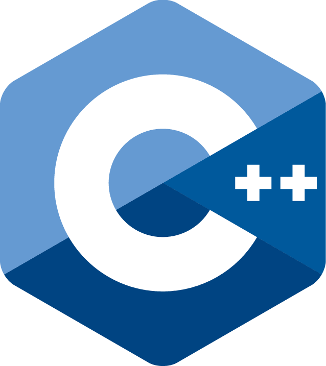

Lenguaje C++.
Descripción.
C++
es un lenguaje de programación de propósito general que se utiliza en una amplia gama de aplicaciones, desde el desarrollo de sistemas operativos hasta la creación de aplicaciones de escritorio, aplicaciones web, juegos y software embebido. Su nombre "
C++
" se refiere a la capacidad de "incrementar" o "mejorar" el lenguaje
C
original con características de programación orientada a objetos, lo que permite organizar y modularizar el código de una manera más eficiente.
Una de las características distintivas de
C++
es su capacidad para trabajar con punteros y gestionar la memoria directamente, lo que le brinda un alto grado de control sobre los recursos del sistema. Esto puede ser beneficioso para aplicaciones que requieren un rendimiento óptimo o para trabajar en sistemas de tiempo real.
Además,
C++
cuenta con una amplia biblioteca estándar (STL, Standard Template Library) que proporciona una variedad de contenedores y algoritmos listos para usar, lo que facilita la implementación de estructuras de datos y algoritmos comunes sin necesidad de escribir código desde cero.
Características.
Programación orientada a objetos:
C++
es un lenguaje orientado a objetos que permite la creación de clases y objetos, lo que facilita la organización y reutilización del código.
Herencia: Permite la creación de nuevas clases basadas en clases existentes, lo que fomenta la reutilización de código y la creación de jerarquías de clases.
Polimorfismo:
C++
admite el polimorfismo, lo que significa que objetos de diferentes clases pueden responder a una misma función de manera diferente, lo que facilita la escritura de código genérico y flexible.
Sobrecarga de operadores: Los operadores pueden ser sobrecargados para que funcionen con tipos de datos personalizados, lo que permite crear interfaces más intuitivas y expresivas.
Gestión manual de memoria:
C++
permite el control directo de la memoria, lo que puede ser beneficioso para aplicaciones que requieren un uso eficiente de los recursos, pero también conlleva la responsabilidad de liberar la memoria utilizada.
Plantillas: Las plantillas permiten la creación de tipos y funciones genéricas que pueden trabajar con diferentes tipos de datos sin necesidad de escribir código específico para cada tipo.
Eficiencia y rendimiento:
C++
está diseñado para ofrecer un alto rendimiento y eficiencia, lo que lo hace adecuado para aplicaciones que requieren un procesamiento rápido y uso eficiente de los recursos del sistema.
Usos.
Desarrollo de sistemas operativos:
C++
se utiliza en el desarrollo de sistemas operativos, como Microsoft Windows y partes de Linux, debido a su capacidad para interactuar directamente con el hardware.
Desarrollo de videojuegos:
C++
es ampliamente utilizado en la industria de los videojuegos debido a su rendimiento y control de bajo nivel. Motores de juegos como Unreal Engine están escritos en
C++
.
Aplicaciones de escritorio: Se utiliza para crear aplicaciones de software de escritorio, como suites de oficina, editores de texto y aplicaciones gráficas.
Aplicaciones embebidas:
C++
se utiliza en aplicaciones embebidas, como sistemas de control automático y dispositivos electrónicos, debido a su capacidad para gestionar la memoria de manera eficiente.
Desarrollo de compiladores y herramientas de desarrollo:
C++
se utiliza en la creación de compiladores, depuradores y otras herramientas de desarrollo de software.
Aplicaciones científicas y matemáticas: Se utiliza para desarrollar software científico y matemático, como software de simulación, análisis de datos y visualización.
Aplicaciones de alto rendimiento:
C++
se utiliza en aplicaciones que requieren un alto rendimiento, como sistemas de trading financiero, motores de búsqueda y procesamiento de imágenes y videos en tiempo real.
